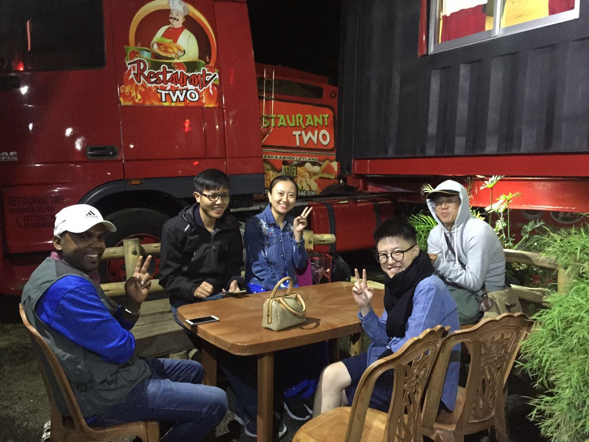

创业， 需要有“扎硬寨， 打死仗”的勇气！
王福强 - fujohnwang AT gmail DOTA com
其实对创业伊始可能遇到的困难还是有准备的，尤其是人层面， 大部分人看的是平台的名声是否够大， 待遇是否优厚，这其实是最正常不过的事情，但短短几天跟一些同学聊下来， 还是会有一些感受要吐露一下， 借Fenng今天的小道消息声明创业之机， 闲话些许创业的入门感悟。
我前阵子十一假期跟Leanwork的几个创始人去斯里兰卡旅游， 风景自然很美， 但整个行程下来， 给我印象深刻的却不是那优美的风光，而是一个情景，只可惜， 我没有拍下来， 所以找了最近的一张照片暂且占位一下：

这是我们在Nuwara Eliya路边的一个货车餐厅吃晚饭（没办法，那天到那边实在太晚了， Grand Indian啦之类的饭店已经爆满）， 临近吃完饭的时候，餐桌边来了两条狗， 其中一条狗很胆小， 我给它骨头，它都是战战兢兢的探好几次头才叼过去吃， 开始我也没在意， 但当其他同学也把骨头给它们俩吃的时候， 就体现出差异来了： 这条我认为胆小的狗， 即使是把骨头主动送给它吃， 当另一只狗过来的时候，它也不敢上前。 对这只胆小的狗来说， 我本来还想写一篇类似俞敏洪校长“自卑比狂妄更糟糕”立意的文章来着， 可不好意思， 它不是今天的主题， 今天我要说的是另一只狗， 一只有aggressive气质的狗， 一只首先保证自己不会饿着甚至饿死的狗，一只创业狗！
对于一家创业公司来说， 更加需要的是进取型的人才， 但很多优秀的技术人员却偏保守，甚至往往想法太多，但却行动太少， 即使创业公司能够给得起相应的待遇， 他们也会踟蹰不前， 从而导致创业伊始， 要么是那些抛弃更大机会成本的理想主义者加入， 要么是那些很傻很天真的人加入， 好在， 越是这些粗鄙，或者“面相凶狠”的创业“狗”， 却越有勇于面对现实和创业中种种龌龊的勇气， 越有“扎硬寨，打死仗”的勇气， 因为，对他们来说，纵使对手如何强大， 在他们眼里， 都是可以战略上藐视的， 刘田老师讲的好啊， “这边是小米加步枪， 就着冰雪吃着干粮； 那边是飞机大炮，牛肉罐头； 不服你~，结论：胜利是打出来的！”
那些在大平台上不忿于分配不公想跳出来的同学， 不妨先好好想一下， 如果在资源丰富的大平台上你都无法“挣食”或者清高于不屑与之挣， 那么， 在资源稀薄的创业公司，你就可以高枕无忧吗？ 创业狗，更需要有“光脚的不怕穿鞋的”勇气和勇于面对创业中各种龌龊的实力， 我相信一定有这样的同学， 也看到过很多这样的同学。
昨天， 我见过一位初中毕业的candidate， 聊了5，6句我就不聊了，直接问他什么时候到岗， 价钱他自己开， 要多少我给多少， 今天， HR跟我说，他下周一就到岗， 我其实就喜欢这种同学， 即使我答应的待遇远超出正常情况， 我也愿意一试， 因为我看到的是这个同学的活力， 我不在乎你学历怎么样， 我在乎的是，你有没有勇气跳进来，然后义无反顾的跟我们一起“扎硬寨，打死仗”， 把事情做起来， 可惜的是，很多同学恰恰连这样的勇气都没有。 但是，如果你觉得有这样的勇气，那么， 欢迎你联系我(fq@zs5s.com)， 对我们来说， 公积金全额缴是基本的， 我们也不会以创业公司为名故意压低你薪资待遇， 我们在乎的是你勇于做事和成事的决心！
广告时间
征数是一家做征信大数据的创业公司（记住， 是征数， 不是征途哦~）， 我们希望构建一个开放， 务实， 专注，创新的团队， 我们迫切希望各有所长的同学加入，包括但不限于 前端， 移动端， Java/Scala, 大数据（Spark， Flink， etc）以及运维， 测试同学， 有移动互联网运营的同学也欢迎来聊聊 :-)
「为AI疯狂」星球上，扶墙老师正在和朋友们讨论有趣的AI话题，你要不要⼀起来呀？^-^
这里
- 不但有及时新鲜的AI资讯和深度探讨
- 还分享AI工具、产品方法和商业机会
- 更有原价1000多的付费内容(近500分钟)等着你，加入星球(https://t.zsxq.com/0dI3ZA0sL) 即可免费领取!